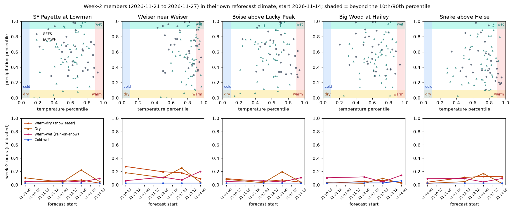

Week-2 snow-drought early warning for Idaho basins · Boise State University
Experimental research product. Not an official forecast. For official forecasts and warnings, see the National Weather Service. Provided as is, without warranty.
Start 2026-11-14 00 UTC (GEFS 31 members, ECMWF 50 members). Week 2 = 2026-11-21 to 2026-11-27.
Shaded by the highest week-2 odds among the alerting events. The five sentinel basins have a heavy outline and a name tag: alerts open only for them. Click any shaded basin for its odds trend and member-by-member table. The other shaded basins are water-supply HUC8s (above NRCS forecast points, with snow sites); they are experimental. Grey basins are not forecast. Use the layers button on the map to change the basemap or add live radar.
at or above the alert levelelevated (1.5x usual or more)near normalnot forecastsentinel basin (alerts open here)
West-wide map: the same signals on large river subregions →
Calibrated odds that the week ends in the tail of basin climate (driest, warm-and-driest or cold-and-wettest 10%), against the usual rate. Red: at or above the 15% alert level. Amber: at least 1.5 times the usual rate. Hover for each model's raw member share.
| Basin | Warm-dry (snow eater) | Dry | Warm-wet (rain-on-snow) | Cold-wet | Wet (watch only) | Warm (watch only) | Cold (watch only) |
|---|---|---|---|---|---|---|---|
| SF Payette at Lowman | 2%vs 9% | 5%vs 9% | 10%vs 11% | 3%vs 13% | 14%vs 13% | 4%vs 10% | 2%vs 11% |
| Weiser near Weiser | 9%vs 9% | 4%vs 9% | 20%vs 11% | 3%vs 13% | 18%vs 13% | 22%vs 10% | 2%vs 11% |
| Boise above Lucky Peak | 4%vs 9% | 4%vs 9% | 11%vs 11% | 3%vs 13% | 16%vs 13% | 9%vs 10% | 2%vs 11% |
| Big Wood at Hailey | 3%vs 9% | 2%vs 9% | 14%vs 11% | 6%vs 13% | 10%vs 13% | 4%vs 10% | 2%vs 11% |
| Snake above Heise | 12%vs 9% | 2%vs 9% | 10%vs 11% | 3%vs 13% | 8%vs 13% | 12%vs 10% | 2%vs 11% |
Week-2 odds from the last 4 daily runs. Each run's week 2 is a different week (the window slides a day per run), so this shows whether the forecasts keep pointing at a tail event, not the odds for one fixed week. Change is from the previous run, in percentage points.
| Basin | Event | Nov 10 | Nov 12 | Nov 13 | Nov 14 | Change |
|---|---|---|---|---|---|---|
| SF Payette at Lowman | Warm-dry (snow eater) | 4% | 5% | 7% | 2% | ▼ 5 |
| Dry | 10% | 4% | 22% | 5% | ▼ 18 | |
| Warm-wet (rain-on-snow) | 5% | 6% | 4% | 10% | ▲ 5 | |
| Cold-wet | 3% | 3% | 3% | 3% | 0 | |
| Weiser near Weiser | Warm-dry (snow eater) | 28% | 20% | 18% | 9% | ▼ 9 |
| Dry | 18% | 11% | 25% | 4% | ▼ 21 | |
| Warm-wet (rain-on-snow) | 6% | 12% | 7% | 20% | ▲ 13 | |
| Cold-wet | 3% | 3% | 3% | 3% | 0 | |
| Boise above Lucky Peak | Warm-dry (snow eater) | 9% | 5% | 7% | 4% | ▼ 3 |
| Dry | 8% | 3% | 20% | 4% | ▼ 16 | |
| Warm-wet (rain-on-snow) | 5% | 6% | 4% | 11% | ▲ 6 | |
| Cold-wet | 3% | 3% | 3% | 3% | 0 | |
| Big Wood at Hailey | Warm-dry (snow eater) | 2% | 5% | 7% | 3% | ▼ 3 |
| Dry | 3% | 2% | 10% | 2% | ▼ 8 | |
| Warm-wet (rain-on-snow) | 11% | 12% | 4% | 14% | ▲ 10 | |
| Cold-wet | 3% | 3% | 3% | 6% | ▲ 3 | |
| Snake above Heise | Warm-dry (snow eater) | 4% | 11% | 13% | 12% | 0 |
| Dry | 2% | 5% | 17% | 2% | ▼ 15 | |
| Warm-wet (rain-on-snow) | 9% | 10% | 4% | 10% | ▲ 5 | |
| Cold-wet | 3% | 3% | 3% | 3% | 0 |

ECMWF open data stops at day 15, so the fortnight uses GEFS alone. Its hindcast skill is lower; it never alerts. GEFS days 17-35 are posted about a day after the rest, so this table can read "pending" on the newest start.
| Basin | Warm-dry (snow eater) | Dry | Warm-wet (rain-on-snow) | Cold-wet |
|---|---|---|---|---|
| SF Payette at Lowman | pending | pending | pending | pending |
| Weiser near Weiser | pending | pending | pending | pending |
| Boise above Lucky Peak | pending | pending | pending | pending |
| Big Wood at Hailey | pending | pending | pending | pending |
| Snake above Heise | pending | pending | pending | pending |
Each member's basin-mean week-2 temperature and precipitation is ranked within its own model's reforecast climate (GEFSv12 2000-2019, ECMWF 2006-2025, starts within 21 days of the date). The share of members in the tail, GEFS and ECMWF half each, is turned into odds with a logistic fit to the 2000-2025 hindcast for the season. Nov-Feb hindcast at the 15% alert level: about 2.5-5 alerts a winter per basin, right 22-29% of the time against a 9-13% base rate, catching about half to two-thirds of events. Warm-wet (rain-on-snow) is the weakest in winter and strongest in March-April. The member-by-member tables are on each basin's page. Truth: PRISM Climate Group, Oregon State University (basin means). Forecast data: NOAA GEFS via dynamical.org; ECMWF open data, © ECMWF, CC BY 4.0 (reduced here to basin statistics). Basin boundaries: USGS Watershed Boundary Dataset. State outline: US Census via us-atlas.
© 2026 Lejo Flores and Boise State University. Products licensed CC BY 4.0; code (Apache 2.0) at github.com/LejoFlores/sawtooth-lookout.